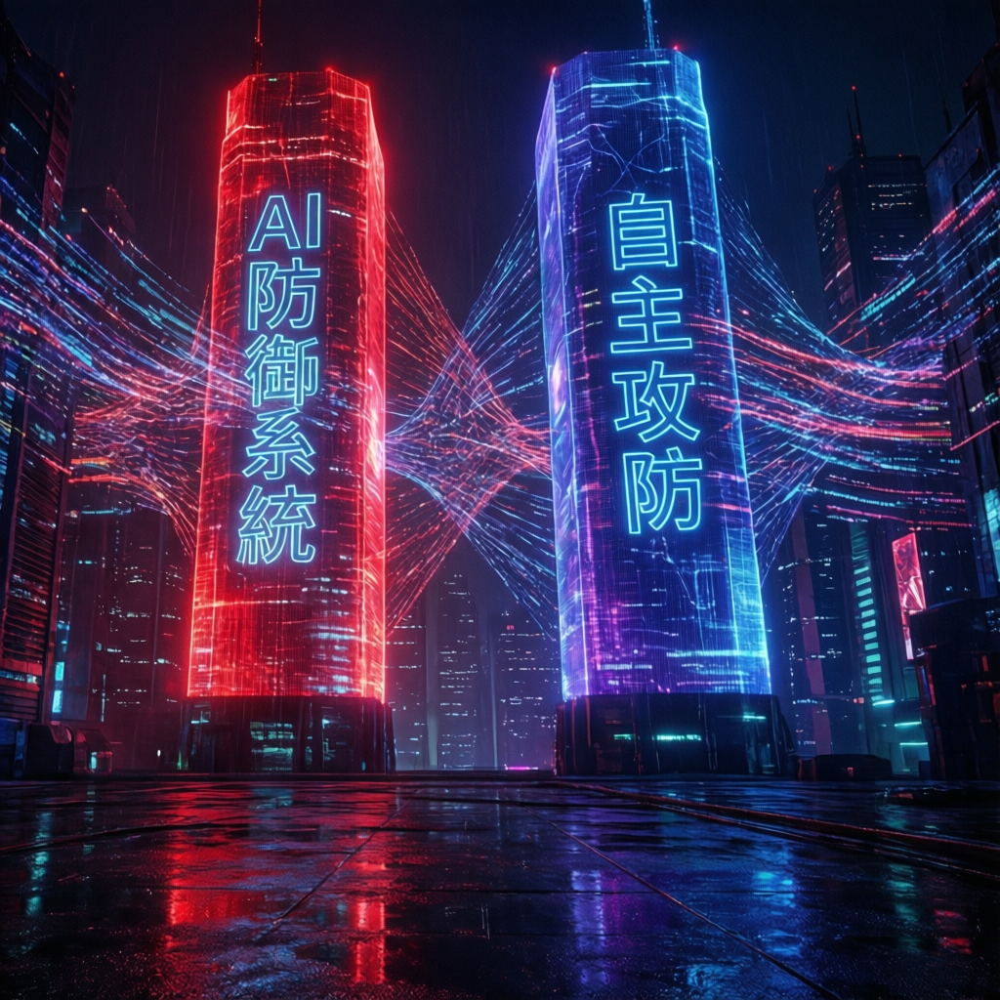

世界經濟論壇最新報告揭示，攻擊者與防禦者同步部署自主系統，開啟智能對抗新紀元

本次報告指出，全球網路安全格局正經歷根本性轉變。世界經濟論壇研究顯示，人工智慧技術已從輔助工具躍升為攻防雙方的核心戰力，形成「AI 對抗 AI」的全新對抗模式。這一演變標誌著網路安全進入自主系統交鋒的新時代，傳統以人為主導的防禦機制面臨前所未有的挑戰。
數據顯示，攻擊方與防禦方同步加速部署自動化智能系統，使得網路對抗的節奏與複雜度呈指數級增長。業界觀察人士認為，此趨勢將重塑整個資安產業的生態結構與技術發展路徑。
研究指出，當前 AI 驅動的網路安全態勢呈現三大特徵：
世界經濟論壇的調查數據顯示，全球主要經濟體的關鍵基礎設施營運商中，已有超過六成開始導入某種形式的 AI 資安防禦方案。同時，資安威脅情報機構觀察到，利用 AI 技術的網路攻擊事件在過去兩年內呈現顯著成長趨勢。
專家分析，這種對稱性的技術軍備競賽意味著資安優勢的維持週期大幅縮短。組織必須建立更敏捷的防禦架構，並強化人機協作的工作流程，方能在持續演變的威脅環境中保持韌性。
AI 對 AI 的對抗模式不僅是技術層面的競爭，更涉及倫理規範、國際治理與人才培育等系統性議題。報告建議各國政府與產業協力建立負責任的 AI 資安發展框架，以確保技術進步同時維護數位生態的穩定與安全。
業界觀察人士預期，未來三至五年內，完全自主的資安代理系統將成為主流。這些系統能夠在極少人工幹預的情況下，完成從威脅偵測、損害控制到復原重建的全流程作業。
然而，研究也警告過度依賴自動化可能帶來新型風險，包括系統間的誤判連鎖反應、對抗性機器學習攻擊，以及關鍵決策過程中的人類監督弱化。平衡效率與管控，將是下一世代資安治理的核心課題。
IBM 的「ATOM」系統以代理式 AI 自主調查、入侵數據豐富化並評分資安警報。現時處理約 95% 的日常調查，每月自動化超過 850 分析小時，大幅提升資安團隊效率。
Google 部署「Big Sleep」AI 代理識別未知軟件漏洞，在漏洞被利用前搶先發現並修補，主動式防禦未知威脅。
Google 的「CodeMender」自動生成安全修補程式，已修補超過 100 個重大安全漏洞，將過往需數週的修補工作壓縮至數分鐘內完成。
Allianz 的「假設驅動 AI 分析系統」在調查期間動態檢索和分析取證數據，取代集中式端點收集，以應對企業系統生成的海量資安數據。
| 指標 | 傳統資安 | AI 資安 | 差異 |
|---|---|---|---|
| 平均入侵成本 | USD 4.8M | USD 2.9M | -USD 1.9M |
| 入侵發現時間 | ~250 天 | ~170 天 | -80 天 |
| 分析師工時（月） | 全人手處理 | 850+ 小時自動化 | 大幅減少 |
| 威脅調查覆蓋率 | 選擇性抽樣 | 95% 自動化 | 接近全覆蓋 |
| 漏洞修補速度 | 數週 | 數分鐘 | 指數提升 |
| AI 應用普及率 | — | 77% 企業已採用 | 主流趨勢 |
「對手正以機器速度運作，利用 AI 進行目標偵察、生成惡意軟件、利用漏洞、規避偵測並大規模發動攻擊。過去需數週的工作，現可在幾分鐘內完成。」
— 世界經濟論壇《賦權守衛者：AI 資安》報告，2026 年 5 月